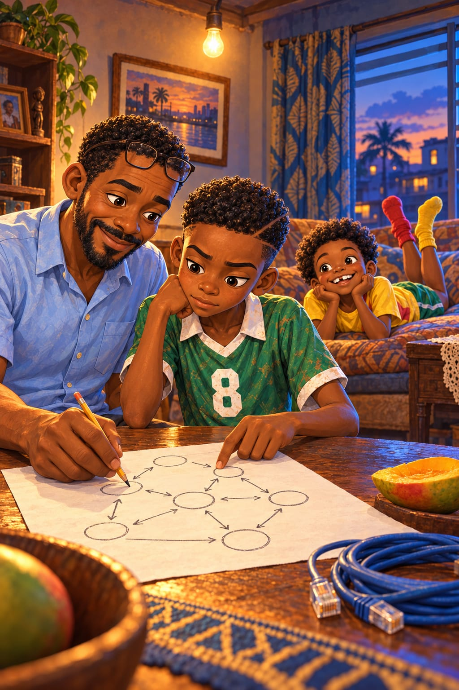

La passe polie et la passe utile

« Propre ! Très propre, Kaydoudou ! »
Sous son parasol rouge, Madame Ekotto applaudit avec ses mains pleines d'huile de beignet.
Kaydoudou vient de faire une passe sur le côté. Encore une.
« Dernier match de poule, mesdames et messieurs ! commente Radio. Lionceaux contre Cobras de Bonabéri ! Le ciel est gris, le match est gris, et c'est toujours 0‑0 ! »
Kaydoudou fait ses comptes, comme toujours.
Si on gagne, on est en demi-finale. Si on fait match nul, ça dépend des buts. Si on perd, c'est fini.
« Ils sont serrés comme les dents d'un peigne ! râle Mireille. On ne passe nulle part ! »
« Kaydoudou à Mireille, commente Radio. Mireille à Kaydoudou. Kaydoudou à BriBri. BriBri à Kaydoudou. Kaydoudou en arrière… Mesdames et messieurs, le ballon fait le tour du rond-point ! Il cherche la sortie ! »
« Propre ! » crie encore Madame Ekotto.
Le ballon voyage, oui. Mais toujours devant les Cobras. Jamais à travers.
Sous le manguier, Tonton Fokou ne dit rien. Rien du tout.
Puis ça arrive.
Kaydoudou reçoit le ballon au milieu. Il lève la tête.
Et il voit Radio.
Seul. Dans le dos de la première ligne de Cobras. Juste là, au milieu du peigne, dans un trou grand comme une porte.
Tout s'arrête, comme une vidéo sur pause.
Il faudrait une passe à ras de terre. Entre deux jambes. Avec juste assez de force.
Kaydoudou regarde Radio. Il regarde les deux Cobras. Il calcule. Et dans sa tête, il voit tout ce qui peut rater. Le ballon dans les pieds d'un Cobra. La contre-attaque. Le but. La défaite. Et tous les yeux du quartier sur lui.
Et si je rate ?
« Kaydoudou ! crie Radio, les bras levés. Ici ! »
Kaydoudou donne le ballon à Mireille. Sur le côté.
Proprement.
Les bras de Radio retombent.
« Pourquoi ? » dit-il, juste avec les lèvres.
Le 0‑0 tient jusqu'à la toute dernière minute.
« Coup franc pour les Lionceaux ! hurle Radio. La Gazelle pose le ballon… elle frappe… BUUUT ! 1‑0 ! Et… non ! Les Cobras remontent tout le terrain ! Ils frappent… 1‑1 ! Dans la même minute ! Mesdames et messieurs, mon cœur ! »
Houou ! Tonton Fokou siffle la fin.
« On est qualifiés ? demande BriBri, tout essoufflé. Dis, on est qualifiés ? »
« Je ne sais pas, dit Kaydoudou. Ça dépend des buts. Il faut attendre ce soir. »
« Quel joli garçon propre ! »
Madame Ekotto lui pince la joue avec ses doigts qui sentent l'huile. Kaydoudou sourit sans montrer qu'il a mal.
« Tu as vu, Armand ? dit-elle à Papa. Ton fils ne perd jamais le ballon. Jamais ! C'est un comptable, ce petit. Il range le ballon comme on range l'argent à la banque. »
« C'est rare, un enfant si calme », dit Monsieur Bilé, le voisin du grillage.
« C'est un futur capitaine », dit le père de Samuel.
« Très propre, très propre », dit une dame que Kaydoudou ne connaît même pas.
Kaydoudou aime bien ce mot. Propre. C'est comme rendre un devoir sans une seule rature.
Pourtant, quelque chose le gratte. Comme un grain de sable dans une chaussure.
Sous le manguier, Tonton Fokou range ses bambous dans un sac de riz. Sans un mot.
« Tonton ne te dit plus rien, hein ? chuchote BriBri. À moi, il crie dessus. À Radio, il a dit qu'il commentait mieux qu'il ne jouait. »
« Et j'ai boudé une heure, ajoute Radio. Record personnel. »
Mais à Kaydoudou, rien. Pas un reproche. Pas un compliment.
Et c'est ce silence qui gratte.
Le soir, Radio court dans la rue en criant.
« Classement de la poule ! Premiers, les Requins, trois victoires ! Deuxièmes… les Lionceaux ! À égalité de points avec les Cobras, mais avec un but de plus ! Qualifiés ! Qualifiés d'un seul but, mesdames et messieurs ! »
« Qualifiés ! » hurle BriBri en sautant sur le canapé. Les voisins applaudissent à leurs fenêtres.
Le lendemain, le président du comité des quartiers fait le tirage au sort des demi-finales, dans sa vieille casquette.
« Il plonge la main, chuchote Radio. Il sort un papier. Suspense, mesdames et messieurs… »
« Lionceaux de Bonamoussadi… contre Requins de Bépanda », lit le président.
Encore eux.
« Tant mieux, dit Mireille. Je n'ai pas fini avec eux. »
BriBri serre les poings.
« Bulldozer. Cette fois, c'est nous qui allons le manger. »
Le lundi, en rentrant de l'école, Kaydoudou passe devant la boutique de Madame Ekotto.
« Kaydoudou. Viens. »
Tonton Fokou est assis sur son bidon jaune. Un mango dans la main gauche, un petit couteau dans la main droite. Il coupe un gros quartier jaune, juteux, et le tend au bout de la lame.
« Assieds-toi. »
« Merci, Tonton. »
Kaydoudou s'assoit sur une pierre. Il mange. Le jus coule jusqu'à son coude. Tonton Fokou mâche son propre quartier, longtemps, sans rien dire.
« Tout le monde dit que tu joues propre. »
« Oui, Tonton. »
« Tu as fait combien de passes, samedi, contre les Cobras ? »
Kaydoudou n'a pas besoin de réfléchir. Il compte toujours.
« Trente-quatre. Peut-être trente-cinq. »
« Et combien sont allées vers le but des Cobras ? »
Kaydoudou ouvre la bouche. Il la referme. Il fait le compte dans sa tête. Le compte ne lui plaît pas.
« Deux, dit-il tout bas. Peut-être trois. »
« Hmm. »
Tonton Fokou essuie son couteau sur son pantalon.
« Une passe sur le côté, c'est poli. C'est comme dire bonjour au voisin. C'est gentil, ça ne fait de mal à personne. »
Il pointe son couteau vers le terrain vide.
« Mais une passe qui traverse, mon fils… une passe qui passe entre deux adversaires et qui casse leur ligne… celle-là, c'est utile. Elle t'emmène quelque part. »
Il regarde Kaydoudou par-dessous sa casquette.
« Le football n'est pas un salon, mon fils. On ne vient pas là pour être poli. »
Puis il lui met dans la main la moitié de mango qui reste.
« Pour la maison. »
Et il ne dit plus rien. Chez Tonton Fokou, ça veut dire que la conversation est finie.
Le soir, sous l'ampoule nue du salon, Kaydoudou n'arrive pas à faire ses devoirs. Il porte encore son maillot vert, le 8 dans le dos.
Il relit la même phrase de son livre de sciences sans la comprendre. La moitié de mango est posée à côté de lui, comme un devoir de plus.
Au fond, BriBri est allongé sur le canapé, les pieds en l'air. Une chaussette rouge, une chaussette jaune. Il imite Tonton Fokou en mangeant un mango imaginaire.
« Le football n'est pas un salon, mon fils, dit-il d'une voix grave. C'est une cuisine. Il y a du feu. Et des mangos. »
« Tais-toi, BriBri. »
« Tu as peur, hein ? »
Kaydoudou lève la tête. Sous son afro, BriBri le regarde. Ses yeux sont devenus sérieux, d'un coup.
« Je n'ai pas peur. »
« Si. Tu as peur de rater. Toi, tu ne rates jamais rien. Alors tu as peur. »
Kaydoudou ne répond pas. Son petit frère ne réfléchit jamais avant de parler. Mais parfois, il dit exactement la vérité. C'est très agaçant.
Dehors, le ciel passe de l'orange au bleu.
La porte s'ouvre. Papa entre, en chemise à manches courtes, son sac d'ordinateur à l'épaule et un rouleau de câble bleu sur l'autre. Il voit le livre ouvert. La page qui ne tourne pas. Le visage de son fils.
Il pose le câble sur la table, à côté du mango. Il relève ses lunettes sur son front. Il s'assoit à côté de Kaydoudou.
« Qu'est-ce qui ne va pas, mon grand ? »
« Tout le monde dit que je joue propre. Mais contre les Cobras, j'ai fait trente-quatre passes. Et deux seulement sont allées vers leur but. Peut-être trois. Et Tonton dit que le football n'est pas un salon. »
Il parle longtemps, ce qui ne lui arrive jamais. Papa écoute sans l'interrompre.
Puis Papa prend une feuille et un stylo.
« Tu sais ce que je fais, à mon travail ? »
« Tu installes des réseaux. Pour que les ordinateurs se parlent. »
« C'est ça. Regarde. »
Il dessine des petits ronds sur la feuille.
« Ici, un ordinateur. Là-bas, tout au bout, un autre. Et entre les deux, plein de petites machines, reliées par des câbles. »
Il tapote le premier rond avec son stylo.
« Quand tu envoies un message depuis cet ordinateur, à gauche, il ne part pas d'un coup. On le coupe en petits morceaux. On les appelle des paquets. Chaque paquet saute d'une machine à l'autre. Comme un ballon, de joueur en joueur. »
La pointe du stylo avance de rond en rond.
« Maintenant, imagine un paquet très poli. Il arrive dans une machine. Il dit bonjour. Il repart vers la machine d'à côté. Bonjour. Il revient. Bonjour. Il ne se perd jamais. Il ne se casse jamais. Il est très propre. »
« C'est Kaydoudou, ce paquet », dit BriBri depuis le canapé, les chaussettes toujours en l'air.
Papa dessine une flèche qui fait des boucles. Des allers. Des retours. Entre trois petits ronds. Jamais vers la droite.
« Est-ce que le message arrive ? »
Kaydoudou suit la flèche du doigt, les sourcils froncés. Elle tourne. Elle tourne. Elle ne va nulle part.
« Non. »
« Non. Un paquet qui tourne en rond ne sert à rien, même s'il ne se perd jamais. Il doit trouver la route vers sa destination. »
Papa dessine une flèche toute droite, qui file au milieu des ronds.
« Parfois, la route la plus courte passe par un endroit plein de monde. Un peu risqué. Alors le réseau ose. Il envoie le paquet quand même. Et si le paquet se perd… »
Il hausse les épaules, très calme.
« … on en renvoie un autre. C'est tout. Personne ne gronde un réseau parce qu'un paquet s'est perdu. On le gronde quand rien n'arrive. »
« Et si je rate devant tout le quartier ? »
« Alors tout le quartier verra que tu as essayé. »
Il tend le stylo à Kaydoudou.
« Tu as le droit de rater une passe, mon grand. Tu n'as pas le droit de ne jamais essayer. »
Cette nuit-là, sous la moustiquaire, Kaydoudou ne dort pas. Dans le lit d'à côté, BriBri ronfle doucement, une jambe hors du drap, la chaussette jaune encore au pied. Dehors, il pleut un peu. Les tôles chantent tout bas.
Kaydoudou se lève sans bruit. Il allume sa petite lampe de poche et la coince entre son menton et son épaule. Il prend une feuille de son cahier de maths.
Il dessine une ligne de trois ronds, en travers. Les Cobras. Ou les Requins. N'importe quel peigne.
Devant la ligne, un rond pour lui.
Puis une flèche qui part sur le côté. Elle longe la ligne sans jamais la toucher et va se perdre au bord de la feuille. À côté, en petites lettres : « polie ».
« Kaydoudou ? marmonne BriBri dans son sommeil. Tu dessines quoi ? »
« Rien. Dors. »
« Tu dessines un paquet poli… »
Et il se remet à ronfler.
Puis une deuxième flèche.
Celle-là part tout droit. Elle passe entre deux ronds. Elle traverse la ligne comme une aiguille traverse un tissu. Et elle arrive de l'autre côté, là où il n'y a plus personne entre le ballon et le but.
Kaydoudou tient son crayon au-dessus de la feuille. Il ne bouge plus.
Il entend la pluie sur les tôles. Il entend BriBri qui ronfle. Il entend, très loin, la voix de Madame Ekotto : « Propre ! »
Et si je rate ?
Puis une autre voix, celle de Papa. Tu n'as pas le droit de ne jamais essayer.
Il écrit le mot. Il appuie si fort que la mine de son crayon casse. Crac.
« Utile. »
Il regarde la feuille à la lumière de la lampe. Il pense à Bulldozer, à ses épaules énormes.
Puis il glisse la feuille avec les autres, entre deux pages de son cahier.
Sa décision est prise. Solide comme une ligne tracée au crayon.
En demi-finale, contre les Requins, il osera.
Même si Bulldozer est devant lui.
Surtout si Bulldozer est devant lui.